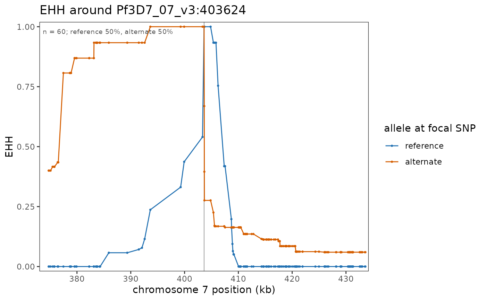

Extended haplotype homozygosity either side of a focal SNP, one curve per allele: how far
the haplotype carrying each allele stays identical as you walk away from it. A sweep shows
as one allele holding EHH near 1 far past the point where the other has decayed – the
picture behind a single point on an run_ihs() scan.
Usage
plot_ehh(
x,
focal,
group = NULL,
span = 50000,
min_haplotypes = 10,
polarized = FALSE,
limehh = 0.05,
genes = NULL,
gene_track = NULL,
gene_label_angle = 0,
colours = NULL,
show_freq = TRUE,
freq_position = c("topleft", "topright", "bottomleft", "bottomright"),
reference = DEFAULT_REFERENCE
)Arguments
- x
A
parasite_haplotypes()object, or a PopStructure (haplotypes are then built withparasite_haplotypes()defaults, which is worth doing yourself when the Fws or MAF cutoffs matter).- focal
The SNP to measure from: a
chr:posid, a bare position, or a gene name fromgenes. A gene holding several SNPs resolves to the one with the most balanced alleles, reported in a message – name achr:posto pick a particular mutation.- group
Optional metadata column; one panel per level.
NULL(default) pools every haplotype.- span
How far either side of the focal SNP to draw, in base pairs (default 50 kb). One value is symmetric, two are the left and the right (named
left/rightif you like), as elsewhere in the package.- min_haplotypes
Skip a group with fewer haplotypes than this (default 10). EHH from a handful of haplotypes is mostly noise.
- polarized
Treat the alleles as ancestral / derived (default
FALSE, matchingrun_ihs()on unpolarized calls, where they are simply the two states).- limehh
Stop each curve once EHH falls below this (rehh's
limehh, default 0.05).- genes
Gene table for the track and for resolving
focal(e.g. PF3D7_GENES).- gene_track
Draw the gene track underneath (default
FALSE).genesis usually supplied only to resolvefocal, and an EHH window is wide enough that a full annotation would crowd a hundred names under it, so this is opt-in.- gene_label_angle
Rotation for the gene names, in degrees.
- colours
Named colours for
reference/alternate.- show_freq
Note each panel's haplotype count and allele frequencies inside it (default
TRUE);FALSEleaves the panel clean.- freq_position
Which corner that note sits in:
"topleft"(default),"topright","bottomleft"or"bottomright". The top corners are usually clear, since EHH is 1 at the focal SNP and both curves have flattened along the bottom by the window's edges.- reference
Reference id, used when
focalnames a whole chromosome.
Details
The alleles are the two states at the focal SNP itself, so this is the mutant-versus-
reference comparison without needing the SNPs annotated: reference is the allele coded 0
and alternate the one coded 1. group adds a panel per metadata group; without it every
haplotype is pooled, which is usually what you want first, since EHH knows nothing about
population structure and a group with few carriers gives a ragged curve.
Examples
ps <- example_pop_structure(umap = FALSE)
hap <- parasite_haplotypes(ps, maf = 0.05)
plot_ehh(hap, "pfcrt", genes = PF_EXAMPLE_DRUG_GENES, span = 30000)
#> `pfcrt` holds several SNPs; measuring from Pf3D7_07_v3:403624 (minor allele 0.5) -- name a `chr:pos` to pick another
